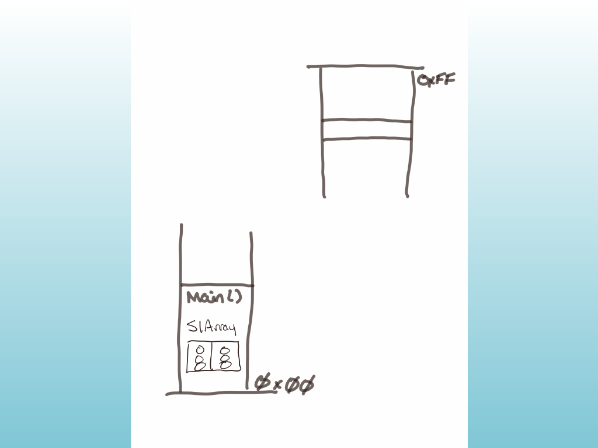
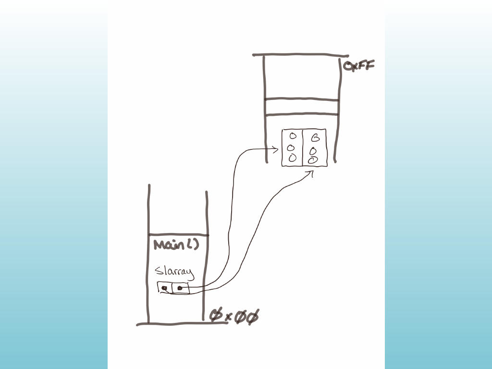
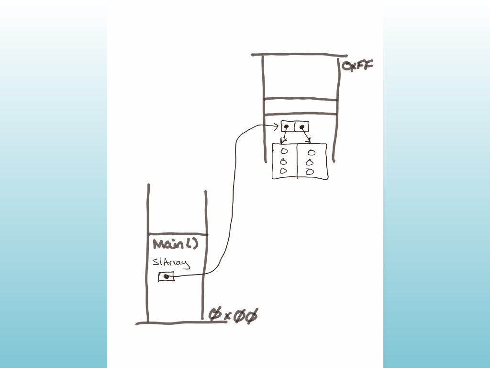
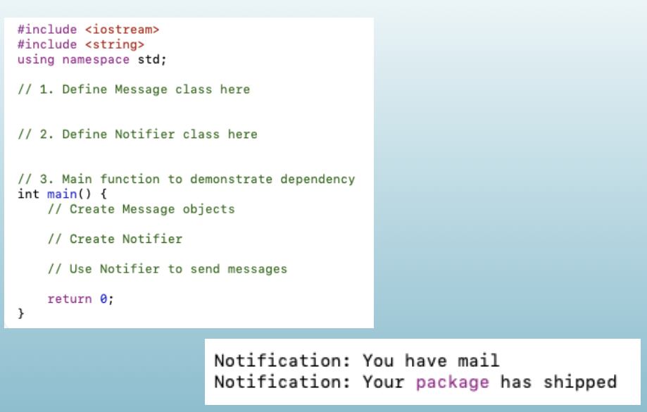

C++
CISP 400
Object Oriented Programming in C++
Dr. Fowler
Folsom Lake College / El Dorado Center | Rancho Cordova Center
| 7.1 Abstract Data Types | 7.8 Private Member Functions |
| 7.2 Object-Oriented Programming | 7.9 Passing Objects to Functions |
| 7.3 Introduction to Classes | 7.10 Object Composition |
| 7.4 Creating and Using Objects | 7.11 Skip |
| 7.5 Defining Member Functions | 7.12 Structures |
| 7.6 Constructors | 7.13 More on Enumerated Data Types |
| 7.7 Destructors | 8.13 Arrays of Objects |
| Relationship Type | Relationship Example | Key Characteristic |
|---|---|---|
| Association | Student ↔︎ Course | General uses relationship |
| Aggregation | Library → Book | Weak ownership (has-a) |
| Composition | Car → Engine | Strong ownership (part-of) |
| Inheritance | Dog → Animal | Hierarchical (is-a) |
| Dependency | Printer → Document | Temporary use |
| Realization | Bird → Flyable | Implements behavior |
| Friendship | Matrix ↔︎ Calculator | Explicit access granting |
We will cover some of these individually.
| Relationship Type | Relationship Example | Key Characteristic |
|---|---|---|
| Association | Student ↔︎ Course | General uses relationship |
| Aggregation | Library → Book | Weak ownership (has-a) |
| Composition | Car → Engine | Strong ownership (part-of) |
| Inheritance | Dog → Animal | Hierarchical (is-a) |
| Dependency | Printer → Document | Temporary use |
| Realization | Bird → Flyable | Implements behavior |
| Friendship | Matrix ↔︎ Calculator | Explicit access granting |
#include <iostream>
using namespace std;
class Document {
public:
string getContent() const {
return "This is the document content.";
}
};
class Printer {
public:
void printDocument(const Document& doc) { // Dependency
cout << "Printing: " << doc.getContent() << endl;
}
};
int main() {
Document myDoc;
Printer myPrinter;
myPrinter.printDocument(myDoc); // Uses Document temporarily
}
/*
Printer needs to know something about the documents coming in.
That's why we use a reference.
*/#include <iostream>
#include <string>
using namespace std;
class Customer {
private:
string name;
public:
Customer(const string& name) : name(name) {}
string getName() const { return name; }
};
class Order {
public:
void printCustomerInfo(const Customer& cust) {
cout << "Processing order for customer: " << cust.getName() << endl;
}
void sendThankYou(const Customer& cust) {
cout << "Thank you, " << cust.getName() << ", for your order!" << endl;
}
};
int main() {
Customer c1("Alice");
Customer c2("Bob");
Order order;
order.printCustomerInfo(c1);
order.sendThankYou(c2);
order.printCustomerInfo(Customer("Charlie"));
return 0;
}No.
#include <iostream>
#include <string>
using namespace std;
class User {
private:
string username;
public:
User(string name) : username(name) {}
string getUsername() const { return username; }
};
class UserDatabase {
public:
User getUserById(int id) {
return User("user_" + to_string(id));
}
};
int main() {
UserDatabase db;
User u = db.getUserById(42); // Dependency via return type
cout << "Fetched user: " << u.getUsername() << endl;
return 0;
}#include <iostream>
#include <string>
using namespace std;
class Speaker {
public:
void sayHello(const string& name) {
cout << "Hello, " << name << "!" << endl;
}
};
class Greeter {
public:
void greetUser(const string& userName) {
Speaker s; // Local variable: dependency
s.sayHello(userName);
}
};
int main() {
Greeter g;
g.greetUser("Taylor");
return 0;
}8.13 Arrays of Objects

// dsla0.cpp — demo of array of StopLight objects
#include <iostream>
using namespace std;
class StopLight {
public:
enum Light { RED, YELLOW, GREEN };
Light steadyLight;
StopLight() { steadyLight = YELLOW; }
StopLight(Light lightColor) { steadyLight = lightColor; }
void cycle();
};
void StopLight::cycle() {
switch (steadyLight) {
case RED: cout << "Red\\n"; break;
case YELLOW: cout << "Yellow\\n"; break;
case GREEN: cout << "Green\\n"; break;
}
}
int main() {
StopLight slArray[2];
slArray[0].cycle();
slArray[1].cycle();
cout << "\\nCreate objects.\\n\\n";
slArray[0] = StopLight(StopLight::RED);
slArray[1] = StopLight(StopLight::YELLOW);
slArray[0].cycle();
slArray[1].cycle();
return 0;
}
// dsla1.cpp — demo of array of StopLight class pointers
#include <iostream>
using namespace std;
class StopLight {
public:
enum Light { RED, YELLOW, GREEN };
Light steadyLight;
StopLight() { steadyLight = YELLOW; }
StopLight(Light lightColor) { steadyLight = lightColor; }
void cycle();
};
void StopLight::cycle() {
switch (steadyLight) {
case RED: cout << "Red\\n"; break;
case YELLOW: cout << "Yellow\\n"; break;
case GREEN: cout << "Green\\n"; break;
}
}
int main() {
StopLight* slArray[2];
slArray[0] = new StopLight(StopLight::RED);
slArray[1] = new StopLight(StopLight::YELLOW);
slArray[0]->cycle();
slArray[1]->cycle();
return 0;
}
// dsla2.cpp — dynamic array of StopLight class pointers
#include <iostream>
using namespace std;
class StopLight {
public:
enum Light { RED, YELLOW, GREEN };
Light steadyLight;
StopLight() { steadyLight = YELLOW; }
StopLight(Light lightColor) { steadyLight = lightColor; }
void cycle();
};
void StopLight::cycle() {
switch (steadyLight) {
case RED: cout << "Red\\n"; break;
case YELLOW: cout << "Yellow\\n"; break;
case GREEN: cout << "Green\\n"; break;
}
}
int main() {
StopLight** slArray = new StopLight*[2];
slArray[0] = new StopLight(StopLight::RED);
slArray[1] = new StopLight(StopLight::YELLOW);
slArray[0]->cycle();
slArray[1]->cycle();
return 0;
}#include <iostream>
#include <string>
using namespace std;
class Message {
private:
string text;
public:
Message(const string& t) : text(t) {}
string getText() const {
return text;
}
};
class Messenger {
public:
void deliverMessage(const Message& msg) {
cout << "Delivering: " << msg.getText() << endl;
}
};
class Communicator {
public:
void start() {
Message m("Mission Start"); // Local dependency
Messenger courier; // Another local dependency
courier.deliverMessage(m);
}
};
int main() {
Communicator c;
c.start();
return 0;
}Resource Acquisition Is Initialization ties the lifetime of a resource to the lifetime of an object.
When the object is created, it acquires or takes ownership of a resource. When it is destroyed, it releases that resource automatically.
A resource is anything that must be acquired and later released.
This looks simple, but cleanup becomes difficult when a function has multiple return paths or exceptions.
If an exception occurs, fclose may never run.
Put the resource inside an object whose destructor performs the cleanup.
The resource is managed by the object instead of by every control-flow path.
C++ destroys local objects as the stack unwinds, so the destructor still releases the resource.
C++ already provides many RAII classes.
When designing an RAII class, ask:
Who owns this resource?
Ownership determines whether the object should be copyable or movable.
A unique owner normally cannot be copied, but it can be moved.
After the move, b owns the resource and a no longer does.
RAII is not limited to standard-library resources.
A custom deleter connects a C library resource to a C++ object’s lifetime.
RAII is powerful, but it is not magic.
Use an explicit operation such as close or commit when cleanup can fail meaningfully.
A resource should have a clear owner, and its owner should automatically release it when its lifetime ends.
Activity
Message with a string content field, a constructor that sets the content, and a string getContent() const method.Notifier with a void sendNotification(const Message& msg) method that prints Notification: <message content>.main(), create two Message objects, create a Notifier, and use it to send both messages.
What’s this section about?
“Passing Objects.”
CISP 400 · Fowler